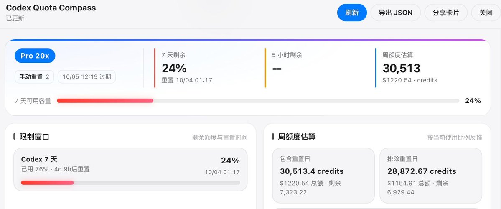
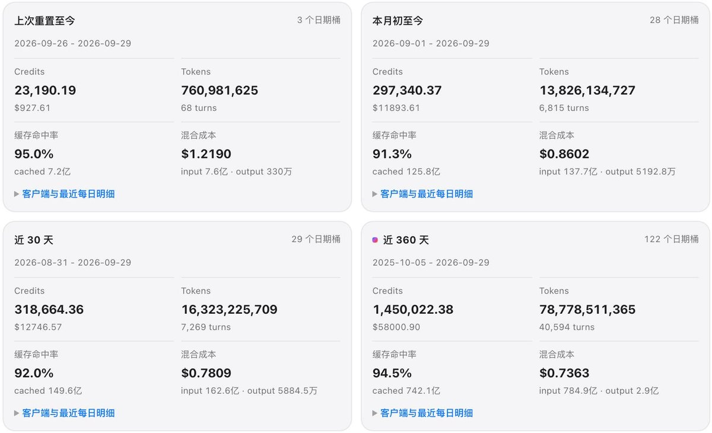

今天我们将推出多项功能，这些功能将提升 Plus 和 Pro 计划的功能范围。为了实现这一提升，我们投入了大量计算资源。随着我们提高底线，我们正在调整各计划之间的相对差异，具体为
Plus = 1X
Pro 100 = 5X
Pro 200 = 10X
并且我们将重新开放 Pro 200 的订阅（我们之前已暂停）。如果你已有现有计划，你将暂时保留 20X 的倍增器，并且还会获得大量额外积分，因为我们知道变革总是艰难的，即便这意味着最终每个人都会获得更多。

Plus = 1X
Pro 100 = 5X
Pro 200 = 10X
并且我们将重新开放 Pro 200 的订阅（我们之前已暂停）。如果你已有现有计划，你将暂时保留 20X 的倍增器，并且还会获得大量额外积分，因为我们知道变革总是艰难的，即便这意味着最终每个人都会获得更多。


OpenAI将于明天重新开放200刀ChatGPT Pro的购买，不过20x套餐的用量只有以前的一半，Tibo发帖的目的是在PUA减半你也不吃亏
说是明天会在套餐中加入不怎么消耗用量的新功能，会是什么呢…… https://t.co/szp0opY73W https://t.co/f7YCz2kOmY
说是明天会在套餐中加入不怎么消耗用量的新功能，会是什么呢…… https://t.co/szp0opY73W https://t.co/f7YCz2kOmY